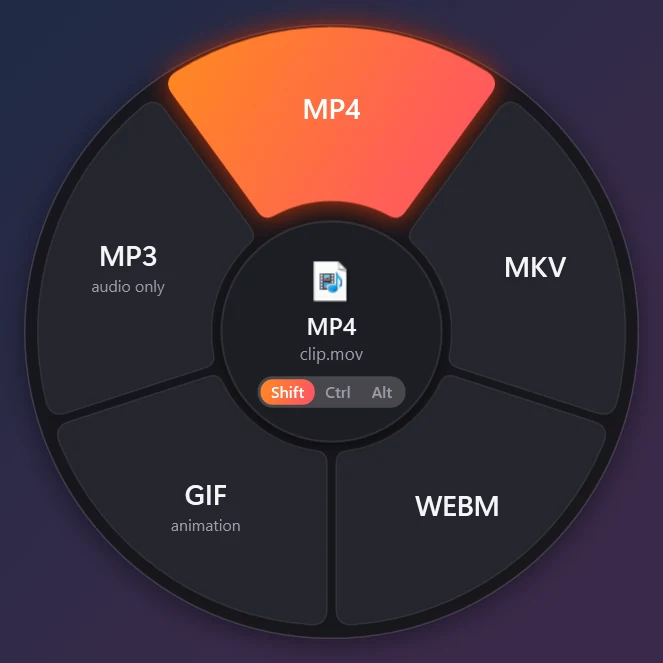
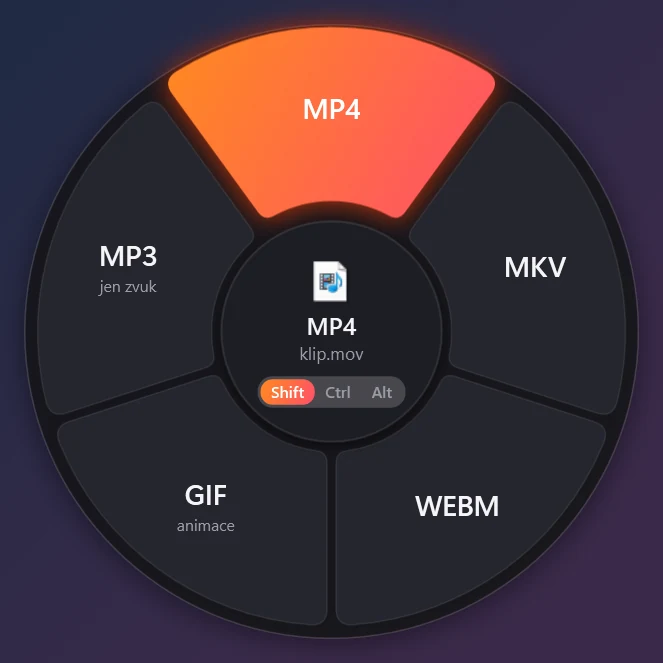

Shift
ConvertPřevést
HEIC to JPG, MOV to MP4, DOCX to PDF, XLSX to CSV. The wheel only shows formats that make sense for the file you're holding.HEIC na JPG, MOV na MP4, DOCX na PDF, XLSX na CSV. Kolo nabízí jen formáty, které pro daný soubor dávají smysl.